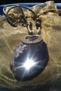
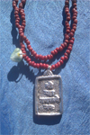

Owl Agate Pendant $13
This Agate slice is unique because has a mysterious combination of colors. The owl is known as the ruler of the night. They are symbols of wisdom and sacred knowledge. There a good totem to have to protect you during astral travels to hidden places and the underworld for information from the dead
Unicorn Agate Pendant $12
The Unicorn is a symbol of Great Power, Grace, Purity, Wonder and Innocence. He is a helper in your spiritual life. He can tap you into your inner child to be more playful. Helps you to forgive more. They do work similar to angels. The unicorn horn is said to be so powerful it grants all wishes one can desire. The myth goes that people started to find out that the horns of the unicorn has power so they started to hunt them. For there protection the unicorn made there horns invisible to blend with horses. The power of the unicorn is said to be given to those who are good at heart or looking to transform there heart. Great for becoming more creative.
Peacock Agate Pendant $9
There feathers associate with love, Protection and seeing in to the past and future. The are said to be close to the Phoenix so you can tap in to that Phoenix Resurrection energy from working with them. Sticking to your physical goals to achieve what you want.

Agate snake 8 Pendant $12
The energy of the Snake is very Powerful. As totems they serve to help you with Advanced Communication, Wisdom,Transformation, Intelligence, Rejuvenation, Protection And Becoming Cunning.

Purple Agate Double Dragon Pendant$15
The Double Dragon is a Great symbol of Double Luck, Strength, Wealth and Happiness. The Double Dragons are known to work on your finances and Career Success when using there symbols and working with them as Totems. They are said to grant you with Double Excellence. You can call on Dragon spirits for help in all area of you life..
Dragon Amethyst Pendant $15
Amethyst is a stone of Intuition, Peace, Calmness and Protection. Amethyst is known to enhance those practices as well. Putting a Amethyst under your pillow helps you dream more vivid. The cool thing about Amethyst is that it has many properties that work in your benefit.

Shiva Agate Pendant $12
Shiva the God of destruction is very powerful entity. He is known as the god of Destruction because he is said to destroy worlds. When your Chakras are fully activated aligned and cleared of debris that state of Balance is considered Shiva-Shakti were your masculine and feminine
Durga Agate Pendant $10
The Divine mother of the universal is one for her many titles. Durga is a fierce force of power. She protects her devotees and grants success in there ventures. She's the one you want on your side when in need of ridding your life of any Bullies, Wickedness, Evil or Enemies. She is a unstoppable force of strength and power.
Clear Quartz Pendant $10
Clear Quartz is a amplifying stone. what ever you add it to it adds power. Its very protective but neutral to what ever your thoughts are. Its a great stone to rub or hold when praying, doing mantras, meditation and any spiritual work. The more you energize your crystal for whatever your goal is the more it attracts..
Carnelian Heart Cross Pendant $6
Ammonite is a stone of protection. It provides for insight and it helps to assist one in seeing the ‘whole picture.’ Gives stability to it's user. Since it is associated with the Root Chakra, it encourages ones survival instincts and is grounding. In feng Shui they are viewed as powerful wealth stones that bring prosperity in to your life
Ammonite Pendant $10
The carnelian stone is mentioned in the bible several times. It is known to bring love, Protection, give more energy, and a good sense of humor. This is a stone worn by many royal families for high status during there time
Chrysoprase Dragon Pendant $15
Chrysoprase is often associated with sea. It has a cool calming effect. Known to be healing also Creativity, Joy, shielding Negativity, clarity and give Higher Consciousness. The Dragon is for Guidance, Fortune and Wisdom

Agate pendant $12
It is a soothing and calming crystal that brings inner strength, self-acceptance and self-confidence.Agate is a good protective stone, especially for children. It also can help strengthen the body and the body's connection to the earth
Clear Quartz stone and cross $9
Clear Quartz is a amplifying stone. what ever you add it to it adds power. Its very protective but neutral to what ever your thoughts are. Its a great stone to rub or hold when praying, doing mantras, meditation and any spiritual work..
Clear Quartz stone $8
Clear Quartz is a amplifying stone. what ever you add it to it adds power. Its very protective but neutral to what ever your thoughts are. Its a great stone to rub or hold when praying, doing mantras, meditation and any spiritual work.
Egyptian Pendant $7
This Catouche is for Tutankhamen also known as King Tut. His full name means “living image of [the god] Amun” He is a symbol of Royalty, Riches and Power. Many wear his pharaoh head or name for self recognition of royalty and the God with in.

Ganesh Pendant $9
Ganesh is known as the remover of Obstacles. He is also the giver on Success and Blessings. Many depict there spiritual views work with Ganesh especially Business owner. Many tend to experience quick results when call on him and using his symbols. This pendant has his mantra on the back. Recite Om Gam GanaPataye Namah Daily with pendant for good Results.

Ganesh Pendant with Blue Gold Stone $8
Ganesh is known as the remover of Obstacles. He is also the giver on Success and Blessings. Many depict there spiritual views work with Ganesh especially Business owner. Many tend to experience quick results when call on him and using his symbols. This pendant has a Blue goldstone on the back. Goldstone is a stone of Courage, Self Discovery, Communication and Ambition. Recite Om Gam GanaPataye Namah Daily with pendant for good Results.